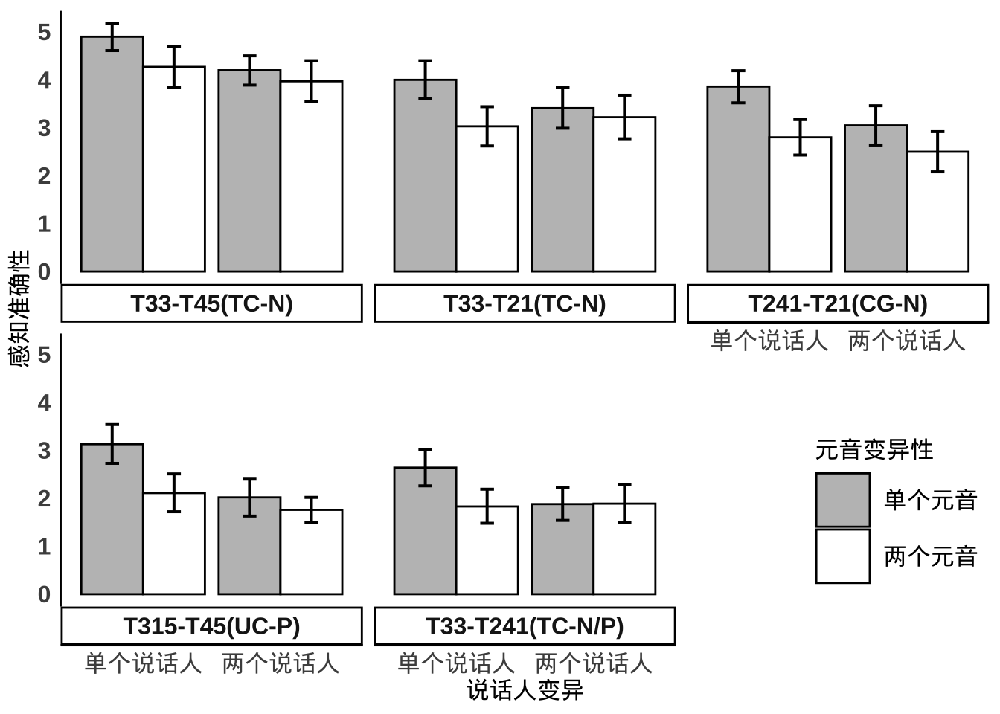
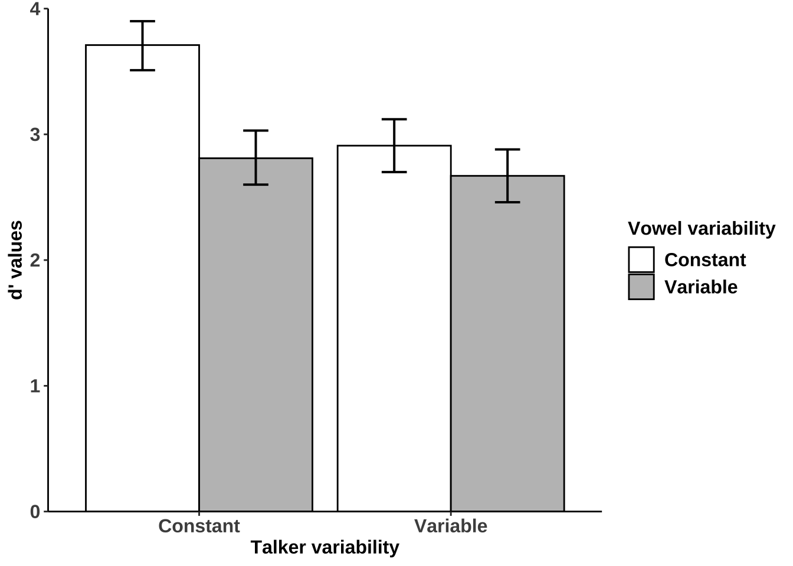

Chapter 10 第十章 语言实验项目案例
10.2 研究背景
在第五章中，我们分析了汉语普通话母语者是如何将泰语声调同化到母语声调中的。成年人对言语语音的感知受到母语语音系统的影响。本章中我们将结合相关理论，感知同化模型，预测不同外语音位对立的感知难度。并且通过声调区分感知实验来验证。感知同化模型预测了几种同化模式的感知区分难度。单类别同化（Single Category, SC）中，两个不同的目标音素被同化为一个母语音素类别。类别差异同化（Category Goodness, CG）两个目标音素被同化为同一个母语音素类别，但一个音素更接近于该类别的原型。两类别同化（Two Category, TC），两个目标音素被同化为两个不同的母语音素类别。其中TC的区分度要好于CG，CG要好于SC。 除了不同的同化类型之外，感知模式也会影响区分任务中的表现。如果任务的记忆负荷大、刺激材料由不同的说话人产出、语音环境比较复杂（例如对于声调实验来说，刺激不仅声调不同而且元音也不同），这时听者会使用音位感知模式。在这个模式中，听者会比较粗放地感知语音，一些语音细节被忽视。反之，听者会使用语音感知模式，比较精细地感知。
在实验中，我们让参与者判断两个声调是否相同，操纵了记忆负荷（两个声调呈现的时间间隔）、语音是否来自同一个人，以及声调所在的音节元音是否相同。
10.3 数据整理+描述性统计
# 我们先处理一下感知同化数据
# 我们可以将数据处理过程封装成一个函数
# 方便后面如果有不同实验组进行调用
cat.table = function(catdata){
catdata %>%
select(subject, isi, rating, stimuli, response, percentage)%>%
# add cgload if necessary
group_by(isi, stimuli, response)%>%
summarise(cat.mean = round(sum(percentage)/16, 3)*100,
rate.mean = round(mean(rating),1))%>%
gather(temp, score, ends_with(".mean")) %>%
unite(temp1, stimuli, temp, sep = "_") %>%
spread(temp1, score)%>%
select("isi","response", "T45_cat.mean","T45_rate.mean",
"T33_cat.mean", "T33_rate.mean", "T21_cat.mean","T21_rate.mean",
"T315_cat.mean", "T315_rate.mean","T241_cat.mean", "T241_rate.mean")->catdata2
return(catdata2)
}
# 感知同化数据
cm.cat.fnl = read.csv("data/ch10/md.cat.fnl.2020-08-04.CSV")%>%
mutate(isi = fct_relevel(isi, "Low","High"),
response = as_factor(response),
response = fct_relevel(response, "M55","M35","M214","M51"))
md.cat.tbl = cat.table(cm.cat.fnl)%>%
mutate(across(where(is.numeric), ~ round(.x, digits = 2)))## `summarise()` has grouped output by 'isi', 'stimuli'. You can override using the `.groups` argument.| isi | response | T45_cat.mean | T45_rate.mean | T33_cat.mean | T33_rate.mean | T21_cat.mean | T21_rate.mean | T315_cat.mean | T315_rate.mean | T241_cat.mean | T241_rate.mean |
|---|---|---|---|---|---|---|---|---|---|---|---|
| Low | M55 | 0.4 | 4.0 | 77.3 | 5.3 | 19.9 | 3.3 | NA | NA | 21.6 | 4.2 |
| Low | M35 | 88.8 | 5.8 | 2.8 | 2.8 | 1.6 | 2.1 | 48.6 | 5.5 | 2.9 | 3.7 |
| Low | M214 | 10.3 | 4.3 | 0.7 | 3.3 | 25.8 | 3.7 | 51.2 | 5.4 | 0.4 | 3.5 |
| Low | M51 | 0.4 | 5.5 | 19.2 | 4.9 | 52.7 | 4.6 | 0.2 | 7.0 | 75.1 | 5.6 |
| High | M55 | NA | NA | 84.7 | 5.2 | 26.4 | 3.2 | 0.2 | 7.0 | 28.1 | 5.0 |
| High | M35 | 85.0 | 5.3 | 0.2 | 5.0 | 1.1 | 3.3 | 44.2 | 5.1 | 0.2 | 2.0 |
| High | M214 | 14.7 | 4.8 | 1.7 | 5.9 | 6.3 | 3.8 | 55.6 | 5.5 | 0.5 | 6.0 |
| High | M51 | 0.2 | 2.0 | 13.4 | 4.4 | 66.2 | 4.0 | NA | NA | 71.2 | 5.1 |
我们结合了感知同化数据和母语选项之间的重合关系对两种不同的记忆负荷下的感知区分表现进行了预测。 低记忆负荷，感知表现由好到差：Two-Category/Non-overlap {T33-T45 = T33-T21 = T33-T241} > Category-Goodness/Non-overlap {T241-T21 } > UnCategorised-Categorised/Partial-overlap {T315-T45}. 高记忆负荷，感知表现由好到差: Two-Category/Non-overlap {T33-T45 = T33-T21} > CategoryGoodness/Non-overlap {T241-T21} > Two-Category/Partial-o verlap {T33-T241} = UnCategorised-Categorised/Partial-over lap {T315-T45}
10.4 数据可视化
我们计算了每个认知条件下每个声调对立的作为区分表现的指标。
library(showtext)
showtext_auto()
# Overall effect of taker and vowel variability plot
label.md = c("T33-T45(TC-N)","T33-T21(TC-N)",
"T241-T21(CG-N)","T315-T45(UC-P)",
"T33-T241(TC-N/P)")
names(label.md) <- c("T33-T45","T33-T21","T241-T21",
"T315-T45","T33-T241")
# 计算不同实验条件下每个声调对立的感知表现平均值
md.dis.df = md.dis.all%>%
mutate(speaker = case_when(speaker == "Constant" ~ "单个说话人",
speaker== "Variable" ~ "两个说话人"),
speaker = fct_relevel(speaker, "单个说话人", "两个说话人"))%>%
groupwiseMean(dprime2 ~ speaker+vowel + Tone_contrast,
data = .,
conf = 0.95,
digits = 3)
# 画柱状图
md.dis.df%>%
ggplot(.,aes(speaker, Mean, fill = vowel))+
geom_bar(colour = "black",
stat = "identity", position = position_dodge(.9))+
geom_errorbar(aes(ymin = Trad.lower,
ymax = Trad.upper),
width = .2, size = 0.7, position = position_dodge(.9))+
facet_wrap( ~ Tone_contrast, ncol = 3,
strip.position = "bottom",
labeller = labeller( Tone_contrast = label.md))+
scale_fill_manual(values=c("grey75", "white"),
name="元音变异性",
labels=c("单个元音",
"两个元音"))+
labs(y = "感知准确性",
x = "说话人变异")+
theme_classic()+
#设置xy轴标注的字体大小
theme(axis.title.y = element_text(size = 12,face = "bold"),
axis.title.x = element_text(size = 12,face = "bold"),
axis.ticks = element_blank(),
axis.text.x = element_text(size = 12,face = "bold"),
axis.text.y = element_text(size = 12,face = "bold"))+
# 设置图例的位置
theme(legend.justification=c(1,1),
legend.position=c(1,0.3),
legend.text = element_text(size = 12),
legend.title = element_text(size = 12))+
theme(legend.key.size = unit(1, "cm"))+
theme(strip.text.x = element_text(size = 12, face = "bold"))
10.5 统计建模
我们使用LMER模型（通过lme4，Bates, Mächler, Bolker, & Walker, 2015）拟合数据，以d’为因变量，记忆负荷（低和高）、说话人和元音变异性（恒定与可变）以及音调对比（T241-T21, T33-T21, T315-T45, T33-T241, T33-T45）为固定因素，参与者为随机因素，包括受试者内固定因素的随机截距和斜率，即说话人和元音变异性条件，以使模型在数据中最大程度地具有普遍性（如Barr, Levy, Scheepers, & Tily, 2013所建议的）。
对于LMER模型中固定因素显著性的估计和相关p值的计算，有几种不同的方法（Luke, 2017）。我们使用了Kenward-Roger自由度近似法（Halekoh & Hojsgaard, 2014）和R中car包的Anova函数。在此，我们报告多级因素或交互作用的主要效应，而不是使用t检验与基线水平进行比较。因此，报告的主要/交互作用效应是所有其他效应水平的平均值，可以直接用于测试我们的预测。
library(car)
## 为了进一步验证假设，我们对数据使用混合模型
md.dis.mdl = lmer(dprime2 ~ ISI * speaker * vowel* Tone_contrast +
(1 + speaker|Subject)+(1 + vowel|Subject),
data = md.dis.all)## boundary (singular) fit: see help('isSingular')# 模型结果
md.mdl.smry = data.frame(coef(summary(md.dis.mdl)))
# 计算不同效应的P值
md.dis.mdl.tbl = data.frame(Anova(md.dis.mdl, test = "F"))
md.dis.mdl.tbl## F Df Df.res
## ISI 0.08144421 1 30
## speaker 41.07944654 1 30
## vowel 57.40271150 1 30
## Tone_contrast 127.22783834 4 510
## ISI:speaker 0.04256406 1 30
## ISI:vowel 0.02175984 1 30
## speaker:vowel 20.06062170 1 510
## ISI:Tone_contrast 0.31491830 4 510
## speaker:Tone_contrast 1.54945070 4 510
## vowel:Tone_contrast 1.02610302 4 510
## ISI:speaker:vowel 0.40565309 1 510
## ISI:speaker:Tone_contrast 0.04896495 4 510
## ISI:vowel:Tone_contrast 0.90573265 4 510
## speaker:vowel:Tone_contrast 0.33158765 4 510
## ISI:speaker:vowel:Tone_contrast 0.11884579 4 510
## Pr..F.
## ISI 0.777310856349093248773840514331823214888572692871093750000000000000000000000000000
## speaker 0.000000446732319194840525892266662119634013095037516904994845390319824218750000000
## vowel 0.000000018974107701813392937758355970799539758075979989371262490749359130859375000
## Tone_contrast 0.000000000000000000000000000000000000000000000000000000000000000000000000002911086
## ISI:speaker 0.837942106026152933040407333464827388525009155273437500000000000000000000000000000
## ISI:vowel 0.883714736199696204721476533450186252593994140625000000000000000000000000000000000
## speaker:vowel 0.000009266734389606409372165847504465574502319213934242725372314453125000000000000
## ISI:Tone_contrast 0.868026640492182921526875816198298707604408264160156250000000000000000000000000000
## speaker:Tone_contrast 0.186630853689322862010158132761716842651367187500000000000000000000000000000000000
## vowel:Tone_contrast 0.393171291943390510681410887627862393856048583984375000000000000000000000000000000
## ISI:speaker:vowel 0.524469889350749340906077122781425714492797851562500000000000000000000000000000000
## ISI:speaker:Tone_contrast 0.995491349899420452373988155159167945384979248046875000000000000000000000000000000
## ISI:vowel:Tone_contrast 0.460284356416936102363024474470876157283782958984375000000000000000000000000000000
## speaker:vowel:Tone_contrast 0.856740099033116431215262309706304222345352172851562500000000000000000000000000000
## ISI:speaker:vowel:Tone_contrast 0.975786261551118694335116288129938766360282897949218750000000000000000000000000000# 对泰语声调对进行事后检验
md.dis.mdl.tone = data.frame(lsmeans(md.dis.mdl,
pairwise ~ Tone_contrast)$contrasts)%>%
mutate(across(where(is.numeric), ~ round(.x, digits = 2)))## NOTE: Results may be misleading due to involvement in interactions## contrast estimate SE df t.ratio p.value
## 1 (T33-T45) - (T33-T21) 0.92 0.12 510 7.95 0.00
## 2 (T33-T45) - (T241-T21) 1.28 0.12 510 11.12 0.00
## 3 (T33-T45) - (T315-T45) 2.08 0.12 510 18.00 0.00
## 4 (T33-T45) - (T33-T241) 2.27 0.12 510 19.71 0.00
## 5 (T33-T21) - (T241-T21) 0.37 0.12 510 3.17 0.01
## 6 (T33-T21) - (T315-T45) 1.16 0.12 510 10.05 0.00
## 7 (T33-T21) - (T33-T241) 1.36 0.12 510 11.76 0.00
## 8 (T241-T21) - (T315-T45) 0.79 0.12 510 6.88 0.00
## 9 (T241-T21) - (T33-T241) 0.99 0.12 510 8.59 0.00
## 10 (T315-T45) - (T33-T241) 0.20 0.12 510 1.71 0.43预测 低记忆负荷，感知表现由好到差：{T33-T45 = T33-T21 = T33-T241} > {T241-T21 } > {T315-T45}. 高记忆负荷，感知表现由好到差: {T33-T45 = T33-T21} > {T241-T21} > {T33-T241} = {T315-T45}
结果： T33-T45 (M = 4.33, 95 % CIs [4.15, 4.52]) > T33-T21 (M = 3.42, 95 % CIs [3.21, 3.63]) > T241-T21 (M = 3.05, 95 % CIs [2.85, 3.26]) > T33-241 (M = 2.06, 95 % CIs [1.87, 2.25]) = T315-T45 (M = 2.26, 95 % CIs [2.06, 2.45]).
# 对刺激说话人变异和元音环境两个变量的交互作用进行进行事后检验
md.dis.mdl.vwl.tlk = data.frame(lsmeans(md.dis.mdl,
pairwise ~ speaker:vowel)$contrasts)## NOTE: Results may be misleading due to involvement in interactions## contrast estimate SE df t.ratio p.value
## 1 Constant Constant - Variable Constant 0.7949375 0.1032501 113.33333 7.6991437 0.0000000000334174910
## 2 Constant Constant - Constant Variable 0.8951875 0.1046631 108.10159 8.5530376 0.0000000000006066259
## 3 Constant Constant - Variable Variable 1.0361250 0.1046631 59.95688 9.8996200 0.0000000000200567341
## 4 Variable Constant - Constant Variable 0.1002500 0.1046631 59.95688 0.9578351 0.7736955322903441568
## 5 Variable Constant - Variable Variable 0.2411875 0.1046631 108.10159 2.3044175 0.1033637878297640755
## 6 Constant Variable - Variable Variable 0.1409375 0.1032501 113.33333 1.3650105 0.5238382126248282145# Mandarin talker vowel interaction
md.tlk.vwl = groupwiseMean(dprime2 ~ speaker + vowel,
data = md.dis.all,
conf = 0.95,
digits = 3)
md.tlk.vwl%>%
ggplot(aes(x=speaker, y= Mean, fill=vowel)) +
geom_bar(colour = "black",
stat = "identity", position = position_dodge(.9))+
geom_errorbar(aes(ymin = Trad.lower,
ymax = Trad.upper),
width = .2, size = 0.7,position = position_dodge(.9))+
labs(y = "d' values",
x = "Talker variability")+
theme_classic()+
scale_y_continuous(expand = c(0, 0), limits = c(0, 4))+
theme(axis.title.y = element_text(size = 12,face = "bold"),
axis.title.x = element_text(size = 12,face = "bold"),
axis.text.x = element_text(size = 12,face = "bold"),
axis.text.y = element_text(size = 12,face = "bold"))+
#change lengent style
scale_x_discrete(labels=c("Constant",
"Variable"))+
scale_fill_manual(values=c("white","grey75"),
name="Vowel variability")+
theme(legend.title = element_text(size=12, face="bold"),
legend.text = element_text(size = 12, face = "bold"))
除了主要效应外，我们还进行了多重比较，并使用Tukey调整来解析说话人变异性和元音变异性的交互作用。在恒定说话人的条件下，恒定元音条件（M = 3.71, 95% CI [3.51, 3.90]）的辨别效果优于可变元音条件（M = 2.81, 95% CI [2.60, 3.03]），b = 0.90, SE = 0.11, t(108) = 8.55, p < 0.001。
同样地，在恒定元音的条件下，恒定说话人条件（M = 3.71）的辨别效果优于可变说话人条件（M = 2.91, 95% CI [2.70, 3.12]），b = 0.80, SE = 0.10, t(113) = 7.70, p < 0.001。此外，恒定说话人 + 元音条件（M = 3.71）的得分显著高于可变说话人 + 元音条件（M = 2.67, 95% CI [2.46, 2.88]），b = 1.04, SE = 0.11, t(60) = 9.90, p < 0.001。
10.6 结论
记忆负荷对感知区分任务没有影响，这与先前有关辅音的研究（Werker & Logan, 1985）不同，但与之前关于声调感知的发现一致（Lee et al., 1996）。这一发现与“线索持续时间假设”相一致，即音响特性的持续时间越长，在短期记忆中衰退的可能性就越小（Fujisaki & Kawashima, 1970）。词汇声调的音响特性，即基频和音调轮廓，贯穿整个响音音节的持续时间，即[ma:]和[mi:]，因此不太可能衰退，更有可能在记忆中保持稳定，而辅音的更短暂的音响特性，如共振峰转换或发声起始时间，则更容易衰退。
与同化过程没有显著影响不同的是，说话人和元音上下文的变化对非母语声调的辨别产生了影响。 在辨别任务中，听众被要求注意语音差异，因此他们默认应倾向于语音模式。然而，高刺激变异性应使听众即使在辨别任务中也倾向于更多的音位模式，这需要他们感知抽象的音高轮廓和相对高度，并减少对具体语音基频差异的注意，这些差异在辨别声调时是重要的。因此，他们的辨别准确性降低了。